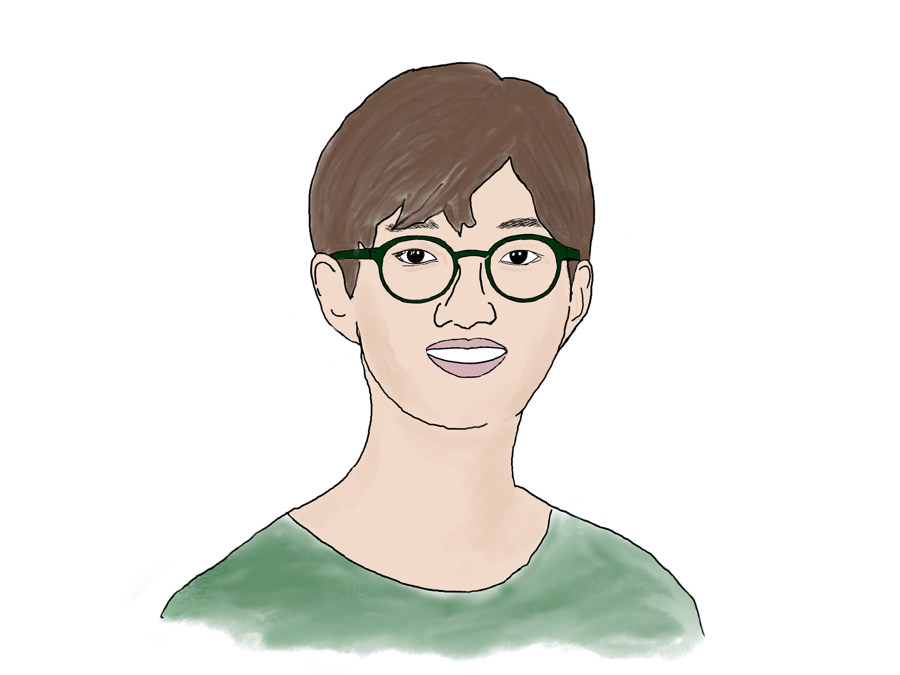

<!-- IDEA: Create a Pong game using the scroll bar. Just a little fun game. Put a button where the user can play it. -->

<div class="horizontalStrip"></div>

<!--  -->
<br>
<h1 class="headline unselectable">A quirky little blog made</h1><h1 class="headline unselectable" style="color: #F09835">by Sangwook</h1>
<div class="article-list">
  {% for post in paginator.posts %}
    <h2><a href="{{post.url | prepend: site.baseurl}}">{{post.title}}</a></h2>
    <!-- <p class="meta"><small>{{post.date | date: '%B %d, %Y'}}</small></p> -->
    <p>{{post.excerpt | strip_html}}</p>
    <br>
  {% endfor %}
</div>


<!-- pagination -->
{% if paginator.total_pages > 1 %}
<div class="pagination">
  {% if paginator.previous_page %}
    <a href="{{ paginator.previous_page_path | prepend: site.baseurl | replace: '//', '/' }}">&laquo; Prev</a>
  {% else %}
    <span>&laquo; Prev</span>
  {% endif %}

  {% for page in (1..paginator.total_pages) %}
    {% if page == paginator.page %}
      <span class="webjeda">{{ page }}</span>
    {% elsif page == 1 %}
      <a href="{{site.baseurl}}/">{{ page }}</a>
    {% else %}
      <a href="{{ site.paginate_path | prepend: site.baseurl | replace: '//', '/' | replace: ':num', page }}">{{ page }}</a>
    {% endif %}
  {% endfor %}

  {% if paginator.next_page %}
    <a href="{{ paginator.next_page_path | prepend: site.baseurl | replace: '//', '/' }}">Next &raquo;</a>
  {% else %}
    <span>Next &raquo;</span>
  {% endif %}
</div>
{% endif %}
